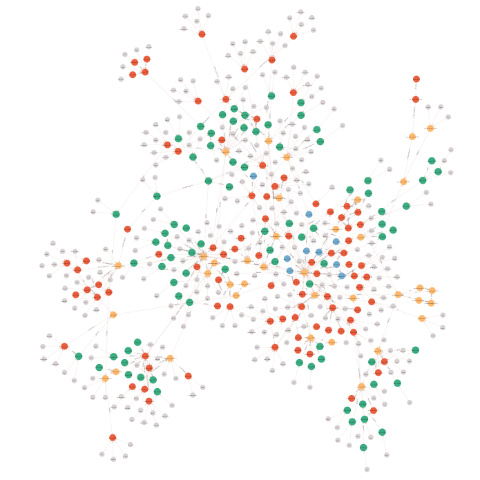

🖼️ Example Images


Scene graph generation (SGG) aims to understand the visual objects and their semantic relationships from one given image. While many eye-level view datasets exist, overhead-view SGG datasets are rarely explored. To address this, we introduce the Urban Aerial Scene Graph (UASG) dataset—an overhead-view dataset manually annotated with objects, attributes, and relationships.
Additionally, we propose a novel Locality-Preserving Graph Convolutional Network (LPG) that preserves initial object features and embeds scene context for efficient relationship prediction.
| Type | Objects | Relationships | Attributes |
|---|---|---|---|
| Count | 25,594 | 16,970 | 27,175 |
The Locality-Preserving Graph Convolutional Network (LPG) model and training code are available at:
🔗 GitHub: DrugD/AUG